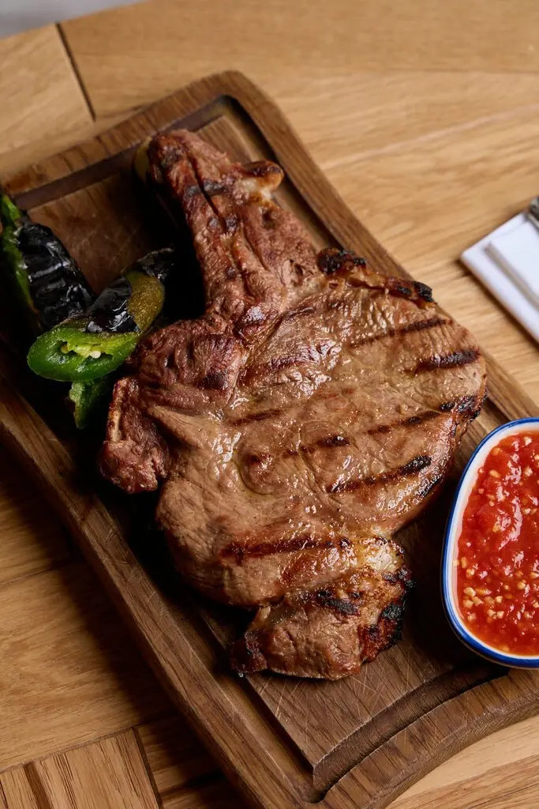
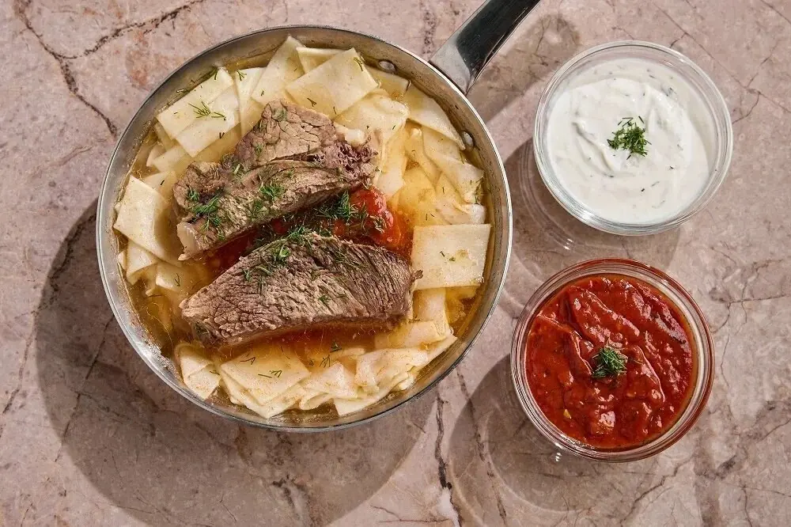
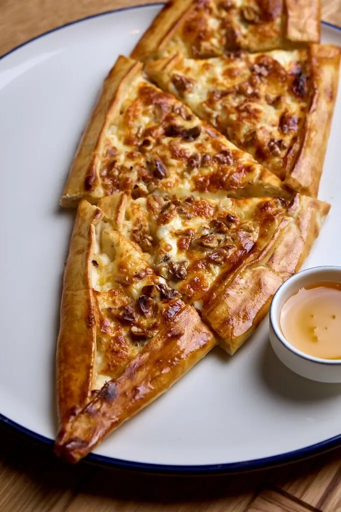

Москва+7 901 707-28-28
Лайлат
Нажмите на ставни и загляните внутрь. Восточная кухня в зале на 40 мест, открыто до двух ночи.
4,7 · 114 оценок
Что на ковре



Подписи по фото гостей. Полное меню с ценами добавим из вашего прайса.
Рассказы гостей
Порции большие, сытные. Большой выбор блюд.Саида
Прекрасное место, вкусная еда, приятная атмосфера и приветливый персонал. Остались в восторге!Эля. gr
Интерьер, кухня и чистота, всё на высшем уровне.Акылай Абдизакирова